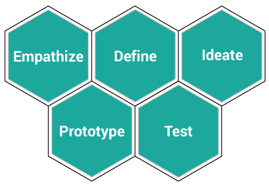

Web Historians is a web app that highlights the importance of archived websites through an interactive educational experience. Targeted at high school IT students who are beginners in HTML, it allows users to update old website code to current web standards.
I formed part of the small team that developed this fully-functional app during the course of one semeseter.
View this project on GitHub
My role in delivering this project
Discover user needs through interviewing high school teachers and IT curriculum research to inform how this app could fit into the classroom and what the students needs are.
Iterative concept development and refinement
Digital prototype testing sessions with users
Project management
- write the project proposal including audience needs and outcomes, risk analysis, task analysis, and a communication plan;
- coordinate weekly team meetings to check progress, review work to date, talk through any problem areas, and assign new tasks for the week ahead;
- define success criteria, writing progress checks, and the final report;
- conduct the final pitch and demonstration of app in a student tradeshow.
App development
- Reuseable HTML elements
- Set-up and team training of Bootstrap and SASS
- HTML template creation
- CSS & Javascript development
- Use of Trove API to retrieve images
- Implementation of AngularJS to populate data
- Use of PHP, mySQL and jQuery to dynamically add completed modules to user’s account
- Addition of dynamic content to pages including breadcrumbs, h1 name and trove link on ‘Working panel’ page
- Creation of walkthrough tutorial to ‘Working panel’ page to guide new users through how they can interact with this page